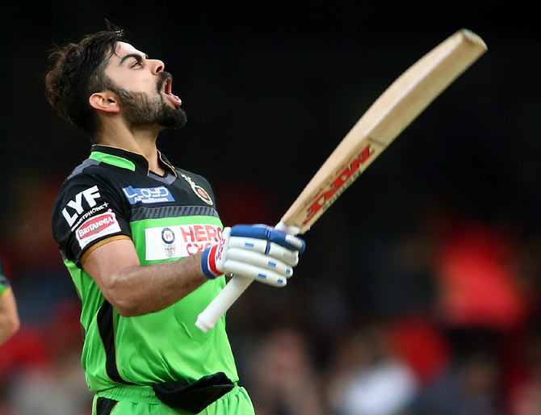

THE PERSON WHO INFLUENCES ME A LOT
INFLUENCER

Virat Kohli
In the world, most of people need to change themselves. It might be they watched somebody who inspires them to do something that never done before and I am one of those people. I love Cricket so much since I watched Virat Kohli on a TV. He is an Indian cricket player and very famous for his talent and skills of competition which are reasons for me want to be like him. I disliked exercising very much I had never thought that sports were very exciting. I wasn't interested in any sports.
I was very an inert person and didn't prepare to study, do activities with cousins, or the challenging things until I had seen the fierce Cricket game that Virat Kohli played.
I felt enjoyable and wanted to play, the same time I really admired his talent, skills and body movement which are the
important things for me or can say another way that I want to change myself form an inert person into an enthusiastic person.
Here are the resons for Virat Kohli’s success
. Fitness is the success factor for Virat Kohli. Gone are the days when you could see unfit players in the Indian cricket team, now the level of cricket is quite high and the schedules are quite busy. If you are not fit enough you cannot play three formats of cricket.
According to Virat, fitness is always a key factor for him to be successful in cricket. Virat is one of the fittest cricketers of the present age. You can see his running speed and other efforts during any match. So, one of the main secrets of Virat Kohli’s success is his physical form which gives him flexibility and speed on the pitch for better performance. Now there are so many young people who are following Virat’s advice to become a healthy and fit person.
. Self-confidence is one of the main reasons for Virat Kohli’s success. Most of the time, many players cannot perform well in international cricket and the main cause of this failure is nothing but lack of self-confidence. While these players have performed well nationally, yes the pressure in international cricket is always different and you can only achieve success in this format if you have enough confidence in yourself.
According to Virat Kohli, believing in yourself is always limited and it is a positive impurity that always prompts you to give your best in the field and then no one can stop you from being successful. Not only Virat Kohli, but there are a lot of great personalities who strongly believe that self-confidence is one of the keys to success.
About Virat Kohli
Virat Kohli is an Indian International cricketer. A middle-order batsman, who can also bowl right-arm medium pace, Kohli captained the victorious Indian team at the 2008 U/19 Cricket World Cup held in Malaysia, and is the captain of the Royal Challengers Bangalore franchise in the Indian Premier League. Heal so represents Delhi in first-class cricket and played for the West Delhi Cricket Academy. Virat Kohli was born on 5 November, 1988 in Delhi to Prem and Saroj Kohli. Virat attended Vishal Bharti and Xavier Convent School. His father worked as a lawyer and untimely died in December 2006. He has an elder brother and a sister. Virat first came into the spotlight when he played for Delhi in a Ranji trophy match against Karnataka on the day of his father’s death. His team mates needed him at a crucial moment when he was much more needed at home. He preferred to do his duty and scored 90 runs. That was an act of great commitment to the team and his innings turned out to be crucial.Virat Kohli shot into prominence as the Under-19 skipper, who led India to victory at the 2008 World Cup held in Malaysia. Virat is one of the finest fielders in an Indian side which needs more men like him to make up for the other abysmal ones. Quick on his feet and also safe with his catching, he can practically field anywhere in the field. He can also roll his arm over, with some occasional medium pace and has modelled his action on Chris Harris. Virat was made the captain of the Bangalore franchise in the Indian Premier League for the season 2013.
He carried his great form into the 2014-15 Border-Gavaskar Trophy Down Under, in which he smashed four hundreds in four Test matches. When Dhoni was injured for the first Test, Virat led India in his absence and then was named India’s next Test captain, after Dhoni decided to quit the Test match form at after the Melbourne Test.
Virat became the first player to notch up three successive hundreds as a Test captain. He scored twin hundreds on captaincy debut in Adelaide before the ton at the SCG. He scored the most runs have any visiting Indian batsman in Australia and ended the series with 692 runs. His great show has silenced the critics, who called for his exclusion from the Test team, after the poor show in England.
Virat started the 2015 World Cup on a bright note, his hundred against arch-rivals, Pakistan, being one of the high points of his career. He couldn’t sustain his form though, the lowest point coming in the semi-final against Australia, where he was dismissed for just 1. Virat though took disappointment in his stride as he looked into the future. Having been confirmed as India’s Test captain, he became the first Indian captain to beat Sri Lanka in their own den, since 1993, securing the series by a 2-1 margin.
Virat’s never ending thirst for runs carried over into the 2016 World Twenty20, he batted like a man possessed, playing crucial knocks right through the tournament. Unfortunately for him, Indian bowling failed at a crucial time during the semi-final against West Indies, leaving him with only the consolation of being named as the ‘Player of the tournament’, for the second successive Twenty 20 World Cup:
Virat’s thirst for runs didn’t show signs of slowing down as he Scored a record high 973 runs during the 2016 edition of the Indian Premier League, the most by any batsman in the history of the tournament – as he led his Royal Challengers Bangalore (RCB) franchise to a runners-up finish.
Virat Kohli has been conferred the Arjuna Award-2013, Peoples Choice Awards for Favourite Sportsperson of the Year 2012, ICC ODI Player of the Year 2012, Ceat International Cricketer of theYear 2013-14 and 2014 ICC World Twenty-20 Player of the Tournament. He taught his team to win, He never gave up. He did everything for his team. Virat is not only a name, He is a Brand. Legend Virat Kohli !
Virat after winning in England

Virat after scoring 50th Century
Virat after scoring a Century
Go to Virat’s Insta profile
Go to Virat’s Twitter profile
A special message from the Programmer
It's my pleasure to share my experience with you all. It is simple HTML based website. I am just a beginner in this field and am trying to be best in this field. If you have any problem with this website you can tell me. I will try my level best to improve that.
Want to know about me. Click below.
About Me